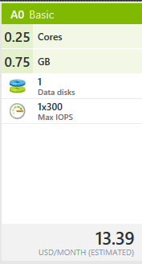

These exercises introduce basic skills and technologies used in lean product development.
After completing this assignment you will be able to:
The goal of this assignment is to familiarize you with lean startup basic technologies. You are expected to devlop a working knowledge of the following tasks. If you are having trouble there are several resources available, besides a Google Search You can also ask a teaching assistant or ask the instructor for assistance.
Make sure that you have a GitHub account, and have installed GitHub for Windows, and Git for Windows. You are going to create a local Git repository, using the course website you created for Project01. Refer to the first three chapters of ProGit and the Lynda.com tutorials, or use GitHub for Windows, and research how to create a repository.
Transform a local website root folder into a Git repository so that you can track changes to your website during the semester.
Use the proper git command to turn your local website root folder into a Git repository. (100) 1. Enter the command you used in text box below.
Upload a copy of your local website to your GitHub online repository.
Create a repository at GitHub named 'MIS362'. (100) 2. Below enter the complete path to your MIS362 GitHub repository.
(100) 3. Use the Snipping Tool to make a screen of your GitHub for Windows screen showing your 'MIS362' GitHub repository and the History. Save the screen shot as "Ex2" in your ' ' folder. You will be combining screen shots from several exercises at the end of this assignment, just as you did in Formative00-PDF File Creation.
Virtual machines can easily be created in the cloud.
Sign into your Microsoft Azure account, at https://portal.azure.com using 'StarID@minnstate.edu'. Select any server. If you are allowed to provision accept the default storage and network settings.  (100) 4. Reflect on what you are doing, and briefly summarize why creating this type of virtual machine would not be possible 10 years ago.
(100) 5. After choosing your virtual machine, take a screen shot of the Summary page. Use the Snipping Tool to make a screen shot that includes the entire console window. Save the screen shot as "Ex3" in your ' ' folder. You will be combining screen shots from several exercises at the end of this assignment, just as you did in Formative00-PDF File Creation.
Use a web browser to verify that you have published your website to https://classes.winona.edu/... Check that your name, StarID, email, class, semester, section and all of your answers are correct and visible. From the menu choose File>Print... and using "Microsoft Print to PDF" save a copy of this assignment as a .pdf file in your ' ' folder.
(50) 6. Save your file 'WebPage.pdf' to the ' ' folder.
Create one .pdf (portable document format) file from the screen shots that you have taken by following these steps.
(50) 7. Save your file 'ScreenShots.pdf' to the ' ' folder.
Use PDFill to merge the WebPage.pdf file with the ScreenShots.pdf file, and save it as 'Summative02.pdf' in ' ' folder.
(50) 8. Upload your file 'Summative02.pdf' to the D2L 'Summativexx' Assignment folder.
Use a browser to view your completed and published website at: https://classes.winona.edu/... Ensure that you have linked this assignment on your home page. Note that your screen shots do not have to be completed to perform this step.